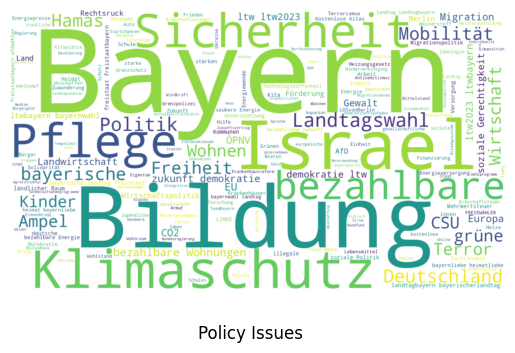

![]()
import pandas as pd
df = pd.read_csv('/content/drive/MyDrive/2023-11-30-Export-Posts-Crowd-Tangle.csv')Text Exploration
In the previous session we talked about text as data, suggesting that text data offers a rich source of insights. This chapter concentrates on the advanced tools for exploring these textual dimensions: BERTopic and the Generative Pre-trained Transformer (GPT). These technologies stand at the forefront of computational text analysis and are intersting tools to unlock the meanings and patterns hidden within the vast textual content of social media.
Topic Modeling with BERTopic
BERTopic (Grootendorst 2022) is a transformer-based topic modeling tool. It uses the BERT (Bidirectional Encoder Representations from Transformers) framework, an advanced method for natural language processing (NLP) that understands the context of words in text. BERTopic is adept at identifying and clustering topics within short text documents Egger and Yu (2022), making it an interesting tool to analyze and categorize text data from social media. The author is actively working on the documentation and keeps improving the topic modeling technique to adapt the latest advances of Large Language Models (LLMs), just recently a Zero-Shot topic modeling approach has been added. I have used BERTopic for a first exploration of stories and posts published by politicians and parties during the 2021 Federal Election in Germany (Achmann and Wolff 2023). Past research has used LDA, another topic modeling algorithm, to explore themes and topics in Instagram posts by politicians (Rodina and Dligach 2019).
Exploration Through Prompting
Data Import
Using GPT for Information Extraction
The focus of this chapter lies in demonstrating how GPT can be employed in a loop to analyze text documents. This methodology aligns with the principles of topic modeling but extends further by leveraging the advanced capabilities of the language model. Our approach involves the iterative processing of text, where GPT aids in identifying, categorizing, and interpreting the underlying themes and sentiments expressed in social media texts.
The GPT application presents a significant difference compared to traditional topic modeling. While topic modeling often aims to automatically uncover hidden thematic structures within a text corpus, our approach with GPT is based on a different assumption: We presuppose that there is already a specific theme or a particular question in mind according to which we want to organize and analyze the documents. This approach allows us to navigate through the vast amounts of text in social media in a targeted and efficient manner, identifying specific insights and patterns that are directly related to our predefined areas of interest.
The following workflow outlines how we could use this information extraction process to create a topic list. Using the list we can classify each document.

!pip install -q openai backoff gpt-cost-estimatorSetup for the OpenAI API
We’re using the new Colab Feature to store keys safely within the Colab Environment. Click on the key on the left to add your API key and enable it for this notebook. Enter the name fpr your API-Key in the api_key_name variable below.
import openai
from openai import OpenAI
from google.colab import userdata
import backoff
from gpt_cost_estimator import CostEstimator
api_key_name = "openai-lehrstuhl-api"
api_key = userdata.get(api_key_name)
# Initialize OpenAI using the key
client = OpenAI(
api_key=api_key
)
@CostEstimator()
def query_openai(model, temperature, messages, mock=True, completion_tokens=10):
return client.chat.completions.create(
model=model,
temperature=temperature,
messages=messages,
max_tokens=600)
# We define the run_request method to wrap it with the @backoff decorator
@backoff.on_exception(backoff.expo, (openai.RateLimitError, openai.APIError))
def run_request(system_prompt, user_prompt, mock):
messages = [
{"role": "system", "content": system_prompt},
{"role": "user", "content": user_prompt}
]
return query_openai(
model="gpt-3.5-turbo-0613",
temperature=0.0,
messages=messages,
mock=mock
)Next, we create a system prompt describing what we want to extract. For further examples of prompts and advice on prompt engineering see e.g. the prompting guide and further resources linked at the bottom of the page.
For the initial example we use social media content shared by politicans and parties. We know, that some of these texts mention policy issues, let’s try to extract these issues across all documents.
Note: The extracted issues are not going to be consistent, because each document is sent as a singular request to the API, thus the previous issues are not going to be used as context.
Modify the following system prompt to extract other types of information. What else could you extract?
- Locations (based on names)
- Names (of persons or places)
- Mentions of Companies
- …
Do not forget the Prompt Archive when experimenting. Share your successfull prompt with us!
system_prompt = """
You are a helpful assistant, an expert for German politics.
**Objective:** Extract policy issues from German language social media texts. Policy issues refer to specific topics or subjects that are the focus of public or governmental debate, analysis, and decision-making. Elections themselves and party slogans or their performance are no policy issues.
**Instructions:** Return each policy issues referenced in user message as a comma-seperated list. Return 'None' if no policy issues are referenced.
**Formatting:** Return a comma-seperated list.
"""Running the request.
The following code snippet uses my gpt-cost-estimator package to simulate API requests and calculate a cost estimate. Please run the estimation whne possible to asses the price-tag before sending requests to OpenAI! Make sure ‘run_request’ and ‘system_prompt’ are defined before this block by running the two blocks above!
Set the following variables:
MOCK: Do you want to mock the OpenAI request (dry run) to calculate the estimated price?RESET_COST: Do you want to reset the cost estimation when running the query?COLUMN: What’s the column name to save the results of the data extraction task to?SAMPLE_SIZE: Do you want to run the request on a smaller sample of the whole data? (Useful for testing). Enter 0 to run on the whole dataset.
from tqdm.auto import tqdm
MOCK = True
RESET_COST = True
COLUMN = 'Policy Issues'
SAMPLE_SIZE = 0
# Initializing the empty column
if COLUMN not in new_df.columns:
new_df[COLUMN] = None
if RESET_COST:
# Reset Estimates
CostEstimator.reset()
print("Reset Cost Estimation")
filtered_df = new_df.copy()
# Skip previously annotated rows
filtered_df = filtered_df[pd.isna(filtered_df['Policy Issues'])]
if SAMPLE_SIZE > 0:
filtered_df = filtered_df.sample(SAMPLE_SIZE)
for index, row in tqdm(filtered_df.iterrows(), total=len(filtered_df)):
try:
response = run_request(system_prompt, row['Text'], MOCK)
if not MOCK:
# Extract the response content
# Adjust the following line according to the structure of the response
r = response.choices[0].message.content
# Convert the string 'r' to a list if it's not 'None', otherwise keep it as None
if r != 'None':
r = r.split(', ')
else:
r = None
# Update the 'new_df' DataFrame
new_df.at[index, 'Policy Issues'] = r
except Exception as e:
print(f"An error occurred: {e}")
# Optionally, handle the error (e.g., by logging or by setting a default value)
print()Reset Cost Estimation# Save Results
new_df.to_csv('/content/drive/MyDrive/2023-12-01-Export-Posts-Text-Master.csv')Next we create a set of Policy Issues. Sets are similar to lists in that they are used to store multiple items, but each unique item in a set appears only once, regardless of how many times it is added, as sets inherently enforce uniqueness and do not allow duplicates. Unlike lists, sets are unordered, meaning they do not record element position or order of insertion. This property makes sets highly efficient for checking membership and eliminating repeated entries. We create the list policy_issues to generate a word cloud.
unique_policy_issues = set()
policy_issues = []
for issues in new_df['Policy Issues']:
if issues is not None:
unique_policy_issues.update(issues)
for issue in issues:
policy_issues.append(issue)
print(unique_policy_issues){'faires Verfahren', 'Straßen', 'EU-Kommission', 'Zusammenhalt unserer Gesellschaft', 'migrationswende', 'bayernliebe', 'Thema Migration nicht unkontrolliert weiterlaufen lassen', 'Sprache', 'FREIHEITfürBayern', 'Freistaat Bayern', 'rezession', 'Hilfe', 'Mehrwertsteuer', 'tv', 'Lügen', 'Bayern stark und stabil bleibt', 'Baumfreiflächen', 'BAföG-Höchstsatz', 'Online Antrag', 'Zurückweisungen an Binnengrenzen', 'Autoverbot', 'wohnungskonzerne enteignen', 'Infrastrukturausbau', 'Reformierbarkeit des öffentlich-rechtlichen Rundfunks', 'bayerische Antidiskriminierungsstelle', 'Baden-Württemberg', 'Strompreiszonen', 'Streit und Chaos', 'linke Inhalte', 'Soldatenberuf', 'bezahlbare Energie', 'Verkaufszahlen bei Heizungssystemen', 'Forschung und Entwicklung', 'Ölheizungen', 'Situation an den Aussengrenzen', 'Leitungen', 'Verbotsorgien', 'Kriminalität', 'CDU/CSU', 'Sprachen und Kultur', 'deutsche Universität', 'bezahlbares Bayern für alle', 'Souveränität', 'wiedervereinigung', 'Landwirte', 'Rechtsstaat', 'moderne Lernumgebung', 'Iran', 'Hebammen', 'Tierschutz', 'Baumwipfelpfad', 'politische Einflüsse', 'bayrisches Brauchtum', 'Mitbestimmung', 'Linksextremisten', 'landtagbayern', 'BayernsOpposition', 'ddr', 'ltw', 'Parteidisziplin', 'Planungs- und Genehmigungsprozesse', 'Wirtschaft fördern', 'Energiepreis', 'Personalschlüssel', 'Bestandsgebäude', 'gleichwertige Lebensverhältnisse', 'Energiepreise', 'Sparen', 'bezahlbarer Wohnraum für alle', 'Jugendzentren', 'Wassersparen', 'niedrigere Standards', 'Sorgen und Nöte', 'Migrationswende', 'junge Männer', 'Haus- und Fachärzte', 'Landwirtschaftspolitik', 'unserezukunft', 'Faschist*innen', 'wegenmorgen', 'konservative Werte', 'innenminister', 'Politik', 'Bundeswehr', 'Startchancen für Kinder', 'Kulturlandschaft', 'umsteuern', 'Klimaschutzziele erreichen', 'Führerscheinrichtlinie', 'Kita-Betreuungsplätze', 'politischer Wechsel', 'Kaufnebenkosten', 'Obergrenze für Bargeldzahlungen', 'heimatliebe', 'Zivilist*innen', 'Glaubwürdigkeit', 'Mehrwertsteuer für die Gastronomie', 'unkontrollierte Zuwanderung', 'LOSvonBerlin', 'Anti-Atom-Ideologie', 'Ausbau der Erneuerbaren Energien', 'Mehr Platz für das Rad und die Öffis', 'Biodiversität', 'linke Medien', 'afdwählen', 'Sozialwohnungen', 'bayerischerlandtag', 'Grenzen', 'Migrationskatastrophe', 'rechtsradikale Parteien', 'Ego-Show', 'Bildungswende', 'Fach- und Ergänzungskräfte', 'Terroristen der Hamas', 'anpackenstattankleben', 'Nachtfahrverbot', 'unsereverantwortung', 'illegale Einwanderung', 'Hotel', 'erfolg', 'Deutschlandticket', 'Unterschleißheim', 'Wirtschafts- und Standortpolitik', 'Startchancen-Programm', 'Personal- und Sachmittel', 'Landtag Bayern', 'Grenzschutz', 'Dampfheizkraftwerk', 'Geflüchtete', 'Bayernpartei', 'Exportwirtschaft', 'Rechte der Bürger', 'Zivilgesellschaft', 'Ernsthaftigkeit', 'BürgerlicheMitte', 'pseudowissenschaftliche Gender-Ideologie', 'sichere Herkunftsstaaten', 'haustürwahlkampf', 'Bayern lebt es sich einfach besser', 'Wahlklatsche', 'Mittelstand', 'Diesel', 'Förderkürzungen', 'Deutschlandpakt', 'Stigmatisierung', 'Befreiung land- und forstwirtschaftlicher Fahrzeuge von der KfZ-Steuer', 'Mobilitätsmix', 'Innere & transnationale Sicherheit', 'LOSvonRom', 'Hetze', '8Oktober', 'MINT-Fächer', 'Stillstand', 'Beteiligung', 'Bevormundung aus Berlin', 'Finanzierungen', 'Technologieoffenheit bewahren', 'illegale Migration', 'islamistischer Terror', 'Auto-Verbot', 'oberfranken', 'Ampel-Regierung', 'GesunderMenschenverstand', 'Perspektiven', 'Arztsitze', 'Terrorangriffe der Hamas auf Israel', 'SPD', 'Bau einer weiteren Betonpiste', 'Bezirksvorsitzender für Unterfranken', 'sommertour', 'Sach- statt Geldleistungen', 'deutschegeschichte', 'ehrenamt', 'Sprachfeststellungstests', 'Klarheit bei Heizungsgesetz', 'opposition', 'bayerischen Steuerzahler entlasten', 'Kinderbetreuung', 'stationäre Versorgung', 'Überforderung', 'LTWBayern', 'Selbstbestimmungsgesetz', 'Interessen', 'landespolitische Fragen', 'Ausländer', 'Unternehmenssteuern', 'CO2-Maut für LKW', 'Öffentlich-rechtlicher Rundfunk', 'Bezirkstage', 'missionunion', 'Abgabe', 'Weltoffenheit', 'Waldbauern', 'Elster Zertifikat', 'Hohenwart', 'Meinungen aus', 'Terrororganisation', 'Aufbaugeneration', 'rechtskonform', 'Meisterausbildung', 'digitale Strategie', 'wichtige Themen', 'energiewende', 'Briefwahl', 'Umweltschutz', 'christlich', 'Kaputt gesparte Kommunen', 'Lebensmittel- und Energiepreise', 'kommende Wahlen', 'Chancengerechtigkeit', 'Entlastung', 'Geldleistungen', 'Bezahlbare Wohnungen und faire Mieten für 7 Mio. Mieter', 'Unterstützung', 'Wirtschaftswachstum', 'Heizungsverbote', 'Haushaltspolitik', 'jüdischer Staat', 'Wasserstoff-Region', 'Flurneuordnung', 'eigene Zukunft', 'Fachkräfte', 'Kontrolle', 'Biomassedeckel', 'Verkehr', 'Mehrwertsteuer auf Grundnahrungsmittel', 'Zuwanderung', 'Zahnsanierungen', 'soziale Leistungen', 'Entwicklungshilfe', 'Benachteiligungen des ländlichen Raums', 'Digitale Bildung', 'Chancenbereitung', 'Abschiebung', 'Einfluss der ideologisierten und politisierten „Klimaforschung“', 'LosvonBerlin', 'Tanz', 'Unterstützung für Familien', 'Weltsicht', 'Kahlschlag in der Krankenhauslandschaft', 'Heizgesetz', 'Klimasparbuch', 'Zahnarzt', 'grundsatzprogramm', 'Städten', 'Steuergeschenke für Konzerne', 'Gesundheitspolitik', 'steuerliche Entlastungen', 'Anpacken', 'Wiedereinzug in den Bayerischen Landtag', 'Teamgeist', 'Numerus Clausus', 'Inklusion', 'Verteidigungspolitik', 'Heimatliebe', 'ausrüsten', 'Ehrenamtlicher Einsatz', 'gefährdungslage', 'Gender', 'Beschränkungen der Bargeldnutzung', 'Stabilität', 'München', 'Dr. Markus Büchler', 'bevormundung', 'selbstbestimmtes Europa', 'Asylbewerberleistungsgesetz', 'wirtschaftspolitik', 'Waldstilllegungen', 'beschränkt gültiger Führerschein ab 60', 'Bayerns Wälder', 'Gräuel', 'Abschieben', 'islamistischer Terror der Hamas', 'Arbeit', 'MWST in der Gastronomie', 'bezahlbar', '8. Oktober', 'Katastrophenschutz', 'Nahverkehrsangebote', 'Mitmach-Aktionen', 'zivilgesellschaftliche Kräfte', 'Fernsehbosse', 'Brenner-Nordzulauf', 'Einigkeit', 'Gewalt', 'Parteiarbeit', 'Abtreibungen', 'Tanken', 'Privateigentumsschutz', 'politische und gesellschaftliche (Fehl-)Entwicklungen', 'Expertenkommission', 'Bayern selbst entscheiden können', 'Ideen', 'aktueller Rechtsruck', 'Asyl-Lobbyisten', 'Biotechnologie', 'starke Stimme', 'Klimaschutz', 'Kontoverbindung', 'bezahlbares Wohnen', 'bürgerliche Koalition', 'Klimawandel', 'Migranten', 'ungewollt schwangere Frauen', 'NGO', 'zeitgemäße Führung', 'gewöhnlicher Aufenthalt', 'Tourismus', 'Bürger', 'Interessen Italiens', 'Terror', 'Mietpreissteigerungen', 'Impfzwang', 'Batteriespeicher', 'Kahlschlag', 'Lärm', 'frühzeitiges Erlernen der deutschen Sprache', 'Bayern liebt', 'internationale Gemeinschaft', 'Maximilianeum', 'EUCH bewegen', 'Ausbildungsreform für die Kinderpflege', 'innovative Bauverfahren', 'Ehrenamt', 'Bildungsoffensive für Deutschland', 'antisemitische Sachverhalte', 'wirtschaft', 'Zusammenarbeit mit dem Regime', 'Pharmazie', 'mittelfranken', 'Abschiebungen', 'Ampel-Chaos', 'gesellschaftliche Unterstützung', 'Frieden in Europa', 'Übernahme nach dem Studium', 'Stimmung gegenüber Geflüchteten', 'Miete', 'Natur erhalten', 'Familien mit Kindern', 'BayernZuerst', 'Bezahlbare Wohnungen und faire Mieten', 'Mitarbeitenden', 'digitale Beantragung', 'Opfer rechter Gewalt', 'Wasserversorgung', 'Pflegegeld', 'Wohnungsoffensive', 'FürDieZukunft', 'Gesetz', 'praktische Übungsstunde', 'Verkehrsträger', 'Ideologiefreiheit an den Hochschulen', 'Jugendparlament', 'neonazistische Gruppen', 'Hessenweiterführen', 'Fahrverbote', 'Sachleistungen', 'Rechtsrutsch', 'Schutz vor Gefahren', 'Landwirtinnen', 'CO2-Bepreisung', 'Modlareuth', 'Bayernwahl', 'Weniger Bürokratie und eine digitale Verwaltung', 'Petition', 'Herausforderungen unserer Zeit', 'deutsche Richterbund', 'ltwby23', 'Klimafreundliches Heizen', 'Kunst', 'zweite Legislatur', 'Gesundheitswesen', 'H2-Heizung', 'Künstliche Intelligenz', 'Universität', 'Migrationsabkommen', 'E-Fuels', 'Politiker', 'bayerische Städtebauförderung', 'Rassismus', 'wählherzstatthetze', 'Länderfinanzausgleich reformieren', 'Medizin', 'Krimbrücke', 'landtagswahl', 'Wasserstoff massiv ausbauen', 'Führerschein für schwere PKWs', 'demokratische Werte', 'politisch Verfolgte', 'Verantwortung', 'Grenzpolizei', 'Leistung', 'Gute Pflege', 'recht', 'Leistungen', 'grüne Klimakonto', 'Ärmsten der Bevölkerung', 'gute Schulen', 'Geflüchtetenpolitik', 'Soldatischer Dienst', 'Stolz', 'Elterngeld', 'regionale Spezialitäten', 'soziale Sicherheit', 'klare Positionen', 'LKW', 'eigenständiges Fahren ab 16 Jahren', 'Bayerns Opposition', 'Klimakollaps', 'Tempolimit', 'einheit', 'CO2-Bilanz', 'heimat', 'friedliches Europa', 'EU-Außengrenzen', 'Grünen', 'Glasindustrie', 'ErbschaftsteuerAbschaffen', 'pro-palästinensische Terrororganisationen', 'Finanzierung', 'Umwelt', 'Schutz von Jüdinnen und Juden', 'Krankenhausreform', 'EU-Eliten', 'Windkraftausbau', 'DIELINKE', 'Bildungs- und Betreuungseinrichtungen', 'Einheimische Bevölkerung', 'steigende Mieten', 'Kostenlosen und ticketfreien ÖPNV', 'kleidung', 'Wochenmarkt', 'Verantwortungsvolle Regierung', 'unabhängige Justiz', 'Solarenergie-Anlage für Balkon oder Dach', 'Pflege', 'Hürden', 'Mehrwertsteuer auf Speisen in der Gastronomie', 'kathaunterwegs', 'Motor für Deutschland und Europa', 'Integration', 'Lehrstühle', 'Wiedervereinigung', 'Männern und Kindern in Israel', 'Asylrecht aushöhlen', 'Bildungsangebote von Verbänden', 'kostenloser Nahverkehr', 'Hürden für den Führerscheinerwerb', 'individuelle Mobilität', 'Halbzeitbilanz der Ampel', 'Gewerbe', 'Planungshoheit der Länder', 'Riedenburg', 'Gebäudeenergiegesetz', 'ökonomie', 'Diskriminierung bei Nichtverwendung der „Gendersprache“', 'Aiwanger', 'Sonderaufnahmeprogramme', 'Landtagswahlen', 'Taurusmarschflugkörper', 'Partei der Mitte', 'frühkindliche Bildung', 'Geiseln', 'Mobilität für alle', 'Vergesellschaftung großer profitorientierter Wohnungskonzerne', 'Apotheke', 'politische Bildung', 'Landräte', 'Wirtschaftlichkeit', 'Absenkung der Mehrwertsteuer', 'Ökomodellregionen', 'Leichenmisshandlung', 'Rückführungsabkommen', 'Unsicherheiten für Studierende', 'Sympathiekundgebungen für den Terror in Israel', 'bayerischerrundfunk', 'Corona-Bußgelder', 'Parteien', 'Dorferneuerung', 'Kernfusion', 'Werte', 'Krankenhausversorgung auf dem Land', 'Sauerlach', 'Bürgerinteresse', 'Bayern wird Wasserstoffland Nummer 1', 'Krankenhäuser', 'mauerfall', 'Genehmigungsprozesse', 'Schwarz-Grün', 'Atomkraftwerken', 'Hofsterben', 'Ausländer-Gewalt', 'Versorgung', 'Drittstaatsangehörige', 'Festung Europa', 'Unterfranken', 'Heimat', 'natürlicher Rohstoff Holz', 'Lösungen', 'Abgabelast pro gefahrenen km', 'gegen grüne Ideologie', 'Gegenpositionen zum herrschenden Zeitgeist', 'Hilfe und Arbeitsmigration', 'Sitzen bleiben', 'Familienbetriebe stärken', 'Landtagskandidat*innen', 'fossile Energieträger', 'europäische Regelung', 'CSU-Versprechen im Wahlkampf', 'palästinensische Terroristen', 'Grüne', 'Klimakonto', 'Menschenrechtsverletzungen', 'Verkehrsbelastung', 'autoritäre Gesundheitspolitik', 'Israel', 'wirtschaftliche Entwicklung des Freistaates', 'staatliche Verwaltung', 'tradition', 'gestiegene Kosten für Heizung', 'Zukunftsvertrag zur Landwirtschaft in Bayern', 'Kürzungshammer', 'Soziale Politik', 'grüne', 'Maghreb-Staaten', 'Förderrunde', 'gesellschaftliches Wohlergehen', 'Bewusstsein', 'Gewinnung von Arbeits- und Fachkräften', 'Bandenkriminalität', 'Stellenabbau', 'Fördergelder', 'Pflegeversorgung in der Heimat sicherstellen', 'Richtungsentscheidung', 'bezahlbare Wohnungen', 'Gelder für Freiwilligendienste', 'bayerische Volkspartei', 'Geburtsstationen', 'landtag', 'Bayerntour', 'konsequente Rückführung krimineller Straftäter', 'Gesundheitsversorgung', 'Bus und Bahn', 'Schweden', 'Regeln', 'kostenlose Kitas', 'Wahl am 8.10.', 'bayerische Grenzpolizei', 'Populistische Politik', 'Klimakleber', 'Leichenschändigung', 'vereint', 'EU-Sanktionen', 'Innere Sicherheit', 'konservative Opposition', 'Breitbandversorgung', 'Lebensqualität', 'Ausbildungskosten', 'bezahlbarkeit', 'Vertrauen in demokratische Institutionen', 'Minderheit im eigenen Land', 'Wasserstoffdrehkreuz', 'CO2-Preis', 'Erdgasheizungen', 'Erbschaftsteuer', 'Abkommen', 'landtagswahlen', 'Mobilfunk', 'Fakten', 'Lebensverhältnisse', 'Bayernliebe', 'DRG-Fallpauschal-Finanzierung abschaffen', 'Parteivorsitzende', 'Demokrat*innen', 'Demonstranten', 'Investition in Ausstattung der Schulen', 'EU stoppen', 'russischer Angriffskrieg gegen die Ukraine', 'politische Gefangene', 'FREIHEITfürBAYERN', 'Wirtschaftspolitik', 'Forschung an KI', 'gebührenfreie Kitas', 'Gesundheit', 'Familienpolitik', 'Ideologie', 'Handeln', 'Jugend', 'Rechtsstaatlichkeit', 'Startchancen', 'sinkender Strompreis', 'kostenfreie Bildung', 'Forschung', 'Gefahrenstellen', 'Schule und Berufsleben', 'Kommunen', 'Haft', 'Schlaganfall-Versorgung', 'straffällig', 'Heizungsgesetz', 'Grenze', 'ltwby', 'Selbstbestimmung', 'Geld', 'tagderdeutscheneinheit', 'ländliche Räume', 'Respekt', 'Bürgerenergie-Genossenschaften', 'Antisemitismus', 'EU-Asylkompromiss', 'Automobilindustrie', 'Markus Söder und die CSU', 'Immobilienhaie', 'Kandidierenden', 'Sanierungsbedarf', 'Kurs', 'Vernichtung', 'Wissenschaft', 'Kitaplätze', 'Wirtschafts- und Sozialpolitik', 'Rente', 'EWERG eG', 'Grüne raus aus der Regierung', 'Strompreise von Umlagen und Steuern', 'Arbeitsvertrag', 'Politik für die eigenen Leute', 'PolitikFürUnsereZukunft', 'Beseitigung von Weltraumschrott', 'Rundfunkrat', 'künftige Generationen', 'GEAS', 'Bezahlung in der Pflege', 'Spaltung', 'Verbeamtung', 'international', 'nürnberg', 'Strompreise', 'faire Bezahlung von Pflegekräften', 'rechte Politik', 'Wirtschaftszweig', 'Kandidatinnen und Kandidaten', 'Satellitendaten', 'Verkehrsentlastung', 'Nationaler Sicherheitsrat', 'begleitetes Fahren', 'starkes und bezahlbares Bayern', 'Migrationspolitik', 'NGOs', 'Umwidmung von Parkplätzen', 'heimische obst- und nahrungsmittel', 'Seenotrettung', 'Betonfundamente', 'CSU', 'Technologie-Offenheit', 'Datenschutz', 'öffentlich-rechtlichen Medien', 'Erhalt der heimischen Lebensmittelproduktion', 'politikmitverstand', 'Landwirtschaft', 'Nationale Raumfahrtstrategie', 'Hightech', 'Arbeitslosenquote', 'Artenvielfalt', 'Kassenleistungen', 'Wirtschaft', 'Wohlstand', 'PIN', 'Zukunftskurs', 'einheitliche Regelungen', 'EU', 'Wohnung', 'staatliche Betriebskostenförderung', 'neoliberale Wirtschafts- und Finanzpolitik', 'antisemitische Einstellungen', 'Lebensmittel', 'Dorfentwicklung', 'Wasserstoff', 'CO2-Bindung', 'Biomasse', 'handlungsfähiger Staat', 'Vergütung', 'starke Bildungspolitik', 'Judenhass', 'Privatsphäre', 'Wasserstoff-Tankstelle', 'Schienen', 'sauberes und bezahlbares Zuhause', 'Geschichte', 'bayerisches Familiengeld', 'Betriebskostenförderung', 'gemeinnützige Arbeit', 'LTWBy', 'Lärmschutz', 'Förderung von Ideen zur Verbesserung von Unterricht und Schule', 'Elektrolyseur', 'Kostenlose Kitas', 'versorgungsrelevant', 'WHO', 'HolDirDeineZukunftZurück', 'Rundfunkbeitrag', 'Photovoltaik', 'Gemeinschaftsschule', 'Mieten', 'Bau- und Wohnwirtschaft', 'Energie', 'Abgase', 'Wissenschaftsfreiheit', 'Terror der Hamas', 'BAföG Reform', 'Gedichte', 'Machen statt Niedermachen', 'Hüterin der Bürgerrechte', 'Chancen', 'Tariftreue-Paket', 'flächendeckende Notfallversorgung', 'Umweltfreundliche Mobilitätsformen stärken', 'Kliniken', 'Bildungssystem', 'Feindbilder', 'Landes-Antidiskriminierungsgesetz', 'Radio', 'Abrechnung der Arztkosten', 'Anmaßungen des EuGH', 'Eigentum', 'Eltern- und Schüler*innenvertretungen', 'Windkraft', 'Senioren', 'Ungleichheit', 'Liberalismus in Europa', 'Ausbau des mobilen Internets', 'Lauterbach', 'Abwehr dieses Terrorangriffs', 'Politik für Leistung und Eigentum', 'teambayern', 'Verbindungsachsen', 'exzellente Ausbildung', 'Demokratie-Dialog', 'Wasserstoffnetz', 'krise', 'Wohnraum', 'politik', 'Energieversorgung', 'Eigentum in Familienbesitz schützen', 'FreistaatBayern', 'praktische Berufe', 'Werkswohnungen', 'Europawahl 2024', 'Quiz-Spiel', 'Nancy Faeser', 'GemeinsamStark', 'Haft für Schutzsuchende', 'Ordnung und Sicherheit', 'Lieferung von schweren Waffen', 'Biotech-Standort', 'Grenzschutzoffensive Bayern', 'sittenwidrig', 'Energiewende', 'Abhängigkeit vom Ausland', 'Arbeit im Rentenalter', 'Engagement für Demokratie', 'queere Menschen', 'Holzwachstum', 'Durchforstungsholz', 'Ingolstadt', 'Pflegekrise', 'Grundnahrungsmittel', 'Versorgungssicherheit', 'attraktive Bedingungen für deutsche Weltraumunternehmen', 'Bildungspolitik', 'Effizienz', 'Straßengroßprojekt', 'Demoskopen', 'Mutter', 'LTW', 'linke', 'Pflegegesellschaft', 'Rechtsterrorismus', 'Hass und Hetze', 'Kartellamt', 'Zwang', 'Rundfunkgebühren abschaffen', 'Arbeitsmarktpolitik', 'Merz', 'Patient', 'Partei', 'Krisen', 'GRÜN', 'heimatmitherz', 'Frieden', 'bürokratischer Mehraufwand', 'Netto', 'bezahlbare Lebensmittel', 'Desinformation', 'Schulen', 'bildungsgerechtigkeit', 'Freilassung aller Geiseln', 'Oberbayern', 'MedizinischeVersorgung', 'Energie-Mix', 'Lebenshaltungskosten', 'Postleitzahl', 'Geothermie', 'Bayern', 'Wirtschaftsfreundlichere Rahmenbedingungen', 'starke Wirtschaft und bezahlbare Energie', 'regierung', 'geschichte', 'Wille', 'Europawahlen', 'ltw2023', 'Anstalten', '2023', 'Lieferkettengesetz', 'Verwaltung', 'Bildung und Forschung', 'sexuelle Gewalt', 'HerzStattHetze', 'Manifest für Freiheit in Europa', 'Fremdbestimmung', 'Steuersenkungen', 'Menschen in Israel', 'Schwaben', 'rechte Gewalt', 'Mietpreisbremse', 'würdevoll', 'EnergiewendeMitVerstand', 'Ländlichen Raum stärken', 'CDUParteitag', 'Zukunftsvertrag für die Landwirtschaft', 'DeineStimmeZählt', 'Gegenwehr gegenüber einer übergriffigen EU-Bürokratie', 'Bruder', 'freistaatbayern', 'Bürgergeldreform', 'Familie', 'ständige Hetze von Söder', 'Förderung innovativer Start-ups', 'demokratie', 'Wärmewende', 'rechte Szene', 'gute Pflege', 'Friedensbewegung', 'Windräder', 'Prinzipien', 'Tätern', 'Verbindungen', 'Sturm', 'Tauruslieferung', 'Kernkraft', 'Kleinkrafträder', 'soziale Gerechtigkeit', 'Hass und Antisemitismus', 'Drogenlegalisierung', 'einigkeit', 'klimaschutz', 'radikale Bewegungen in Österreich und Deutschland', 'wiederverwenden', 'Familien', 'Mangel an Kita- und Pflegeplätzen', 'Kraft der Vernunft', 'faire Mieten', 'Land Israel', 'Region', 'Rundfunk', 'Heizungspolitik', 'Migrationskrise', 'DIE LINKE', 'Sozialepolitik', 'Wohnungsbau', 'Flüchtende', 'Bewirtschaftete Wälder', 'gute Löhne', 'Ganztagsplätze', 'sicherer Strom', 'Grenzen kontrollieren', 'Gegenrechts', 'Chatkontrolle', 'Technologieoffenheit', 'Menschen in Armut', 'Weiden', 'Förderung des Ökolandbaus und der Biologischen Vielfalt', 'Europäische Staaten', 'Innenministerin Faeser', 'Zugangscode', 'Strompreis', 'Forschungspolitik', 'Mullah Regime', 'Verteidigung Israels', 'Situation in den Aufnahmekommunen', 'Klimakrise', 'Opfer', 'Ausbildungsstätte', 'Rechtsmittel', 'Streit', 'Bildungsprotest2023', 'heimatbayern', 'katrinebnersteiner', 'Kraft', 'Forschungsbedingungen', 'Verwaltungsrat', 'EU-Gängelung', 'Impuls', 'Produktionsverlagerung', 'Industrie', 'kriminelle Ausländer', 'Staatswald', 'Nazis', 'sachsenanhalt', 'Babys in Bayern', 'Spitzenkandidat', 'Überlänge von 16,50 m auf 17,40 m zulassen', 'Einwanderungs- und Asylpolitik', 'Spritpreisbremse', 'Fördermittelkürzungen', 'gemeinsame Sprache', 'Immatrikulation', 'U18-Wahl', 'mobilität', 'None', 'Kinder- und Jugendplan', 'Krisenverordnung', 'Pflegekonzepte', 'Bürokratieabbau', 'BayernSPD', 'bildung', 'Tradition', 'oberbayern', 'wählen', 'Zugang zur Justiz', 'Wälder', 'Gericht', 'Beste Bildung und weniger Unterrichtsausfall', 'Visionen', 'Terrorism', 'Asylrecht', 'Lernmittelfreiheit', 'Präventionsangebote', 'schlechter ÖPNV', 'Studis', 'humanitäre Verantwortung', 'Ampelpläne', 'Asylpolitik', 'br', 'Mopedführerschein', 'Abschaffung der ungerechten Erbschaftssteuer', 'Demokratieförderung', 'Landärzte', 'traditionelle Studiengänge', 'Enteignung', 'AfD-Wahlergebnisse', 'Holzöfen', 'Nationale Sicherheit', 'bayerische Bezirkstage', 'Bildungswende jetzt', 'Erbschaftssteuer', 'Volksentscheid', 'Landtags- und Bezirkstagswahl', 'Intoleranz', 'Abschaffung des Asylrechts', 'deutschland', 'ErbschaftssteuerAbschaffen', 'Gerechtigkeit', 'Größenwahn', 'Gewalt und Terror in Israel', 'Familienkasse', 'Atomwaffen', 'Wahl', 'GegenRechts', 'Wochen', 'Rücktritt', 'bayerische Staatsangehörigkeit', 'ehemalige SED-Partei', 'Wohnen', 'Mitgliedsstaaten', 'Kultursommer mit Links', 'arbeitsplätze', 'Kernkraftwerke', 'CSU Parteivorstand', 'Terrorismus', 'Anti-Demokrat*innen', 'Sorgen der Bürger ernst nehmen', 'bayerische Interessen im Bund und in Europa', 'die das Klima schützt', 'soziale Politik für Bayern', 'Tarifbindung', 'Bürger*innen-Energiegenossenschaft', 'Abschaffung der CO2-Steuer', 'linksextremistischen Gruppen', 'bayerische Staatlichkeit', 'EEG-Förderung', 'extremisten', 'Leistung und Eigentum', 'Durchhaltevermögen', 'oberpfalz', 'gerechter Freistaat', 'Verbrechen an unschuldigen Frauen', 'Grundsicherung', 'Verlässlichkeit und Kompetenz statt Beliebigkeit und Populismus', 'Los von Berlin', 'ambulante Anlaufstellen', 'AKW-Verteufelung', 'rechnen', 'Herangehensweisen', 'Bezahlbares Wohnen für 7 Mio. Mieter', 'Existenzrecht des jüdischen Staates Israel', 'staatliche Grundfinanzierung von Universitäten und Hochschulen ohne ideologische Vorgaben', 'Stärke', 'Kraftstoff', 'Wasserstoffinfrastruktur', 'vernünftige Mitte', 'Verträge mit Staaten in Nordafrika und Türkei', 'Landtagswahlen in Hessen und Bayern', 'Tempolimit auf Autobahnen', 'pädagogische Qualität von Kitas', 'Gewerkschaften', 'Polizei', 'Russland', 'FlurNatur-Struktur und Landschaftselemente', 'Arbeitsmigration', 'Verbrennungsmotoren', 'Arbeits- und Fachkräfte', 'Bürokratie', 'Kostenlose Kitas für 780 000 Kinder', 'schlechte Bildung', 'Enteignen', 'Steuersätze', 'soziale Probleme', 'Einreisekontrolle an den EU-Außengrenzen', 'israelische Städte und Dörfer', 'FDP', 'Rechtspopulismus', 'Krieg', 'Steuermodelle', 'Schule', 'alleinerziehend', 'buntes Kinderprogramm', 'VPN', 'Anstand', 'Staatsanwaltschaften', 'Arbeitskräftemangel', 'LandtagBayern', 'Verteilungsfragen', 'Souveränitätsverlust', 'Menschenrechte', 'Oberpfalz', 'Einkommensteuer', 'kostenfreie Kitas', 'lebenswertes Bayern', 'Investitionen in die Zukunft', 'sichere Stromversorgung', 'Staatsräson', 'sozialepolitikfürdich', 'Gute Pflege für 2,7 Mio. Senioren', 'Anerkennung', 'Kinder', 'ingolstadt', 'schlanker und effizienter Staat', 'Förderung', 'ausbau', 'Anpacken für Bayern', 'Persönlichkeitsrechte', 'Zuwanderungspolitik', 'Umweltschützer', 'erneuerbare Energien', 'Krankenhaus', 'Deutsche Stromkunden', 'Lehrer', 'Antragsprozess', 'Italianisierung', 'Gegenrassismus', 'inklusives Bildungssystem', 'Stromversorgung', 'Bundesregierung', 'Krankenhaus-Milliarde', 'MitDir', 'heimatschutz', 'Die Konfrontation', 'Toleranz', 'Freibeträge', 'fernsehen', 'freiberufliche Apotheken', 'Leerstandsabgabe', 'Stromleitungen', 'Zahlen', 'FreiheitfürSüdTirol', 'lpt2023', 'Deutschland-Pakt gegen unkontrollierte Zuwanderung', 'Lehrerinnen', 'Mehrsprachigkeit', 'Digitalministerin', 'Vereine und das Ehrenamt stärken', 'anpacken', 'Bevormundung', 'Identität und Nation', 'Kostenlose Bildung', 'Biotopen', 'Sprit sparen', 'Regierungsform', 'Katharina und Ludwig', 'Versorgungsstraßen', 'ÖPNV', 'Blockabfertigungen', 'Lohnersatzleistungen für pflegende Angehörige', 'Ladenschlussgesetz', 'Einbürgerung', 'sozialpolitik', 'Rathausplatz', 'Belebung von Ortszentren und Dorferneuerung', 'Mietendeckel', 'FREIE WÄHLER', 'Privatversicherte', 'Standort', 'Wiedervereinigung Deutschlands', 'Mindestlohn', 'Rückführung von kriminellen Straftätern', 'Insolvenzen', 'Mehr Personal und bessere Zusammenarbeit und Vernetzung', 'Einstellung von Richtern und Staatsanwälten', 'vereinbarkeit', 'Gendern', 'Erhaltung von Dörfern', 'Kinderzukunftsprogramm', 'Pelletheizung', 'Sicherheitsvorkehrungen', 'gute Bildung', 'Gesellschaft', 'landwirtschaft', 'Einzelleistungsvergütung', 'Verdoppelung Kapazität', 'Habeck', 'Naturpark', 'Übergriffigkeiten der EU-Eliten', 'Druck', 'Hausbesitzer', 'Verkehrspolitik', 'Gastronomie', 'starke Wirtschaft', 'Agieren und Finanzierung palästinensischer und propalästinensischer Terrororganisationen', 'kostenlosem ÖPNV für Kinder und Jugendliche', 'Ganzjahrestourismus', 'Schule für alle', 'Erdbeobachtungen', 'Vergesslichkeit', 'Pessimismus', 'Online Ausweis', 'klimaneutraler Wohnraum', 'Kinder und Jugendliche', 'innovativ', 'Ausbau der Windkraft', 'Landespflegegeld', 'besseres Europa', 'Sozialpolitik', 'Asyl', 'ampel', 'individuelle Förderung', 'BP', 'wahlprogramm', 'Menschen mit Behinderung', 'LINKE', 'internationale Wettbewerbsfähigkeit', 'mangelndem Wohnraum', 'Kinder und Jugendliche mit Migrationshintergrund', 'Wasserstoff-Gipfel', 'flächendeckend', 'junge Grüne Abgeordnete', 'Herausforderungen in der Migrationspolitik', 'Zwangsimpfungen', 'Freiheit für Bayern', 'Förderungen für Holz- und Pellets-Heizungen', 'Kindergrundsicherung', 'bayerische Arbeitsplätze', 'Innovation', 'Naturschutz', 'sozialer Aufstieg', 'aktuelle Lage', 'Mittelmeer', 'Gelder', 'innenministerherrmann', 'CO2-Einsparung im deutschen Strommix', 'grüne AKW-Heuchelei', 'Mobilität egal wo du hin willst', 'Italien', 'Deutschland', 'bayern', 'Berliner Senat', 'Gesundheitsreform', 'kostenloses Mittagessen', 'sauberer Strom', 'progressive', 'Mehrwertsteuer in der Gastronomie', 'Steuererhöhung', 'Finanzierung islamistischer Organisationen', 'Staat Israel', 'Begleitetes Fahren ab 15 Jahren', 'Ignoranz', 'Musik', 'kostenfreier Schulweg', 'Windrad', 'Kapazitäten', 'energie', 'konfrontation', 'Stromerzeugung', 'Studieren', 'wissenschaft', 'Menschen vor Ort', 'Haushaltsmittel zur Kofinanzierung der Gemeinschaftsaufgabe Agrarstruktur und Küstenschutz', 'Jugendhaus', 'Streuobstpakt', 'freiheit', 'staatlich subventionierter Industriestrompreis', 'Freie Wähler', 'Medienbildung', 'Antisemitismus-Beauftragter der Bayerischen Staatsregierung', 'Amberg', 'Bevölkerung', 'Rechtsextremismus', 'Trinkwasserschutz', 'dritter Nationalpark', 'Digitalisierung', 'Fachschüler*innen', 'Asylsystem', 'den Grünen und den linkslastigen Medien', 'Vielfalt', 'Humanität', 'Augsburg', 'neue Stromleitungen', 'Jom Kippur', 'Prost', 'stationäre Grenzkontrollen', 'grünklingelt', 'nachhaltigere Raumfahrt', 'Hackschnitzel', 'kostenloser Meister', 'kostenlosen ÖPNV', 'optimistische zukunftsorientierte Politik', 'Sparerpauschbetrag', 'Bargeldnutzung', 'Soziale Gerechtigkeit', 'Märkte', 'bayerisches Förderprogramm', 'Umgang mit Unternehmen', 'höherer Mindestlohn', 'Lebensgrundlagen', 'Handwerk', 'Kooperationsverträge mit der Bundespolizei', 'Flächenverbrauch', 'gleiche Chancen', 'psychische Gesundheit', 'Steuersenkung', 'Ausbildung', 'Grundwasserschutz', 'Institutionen', 'national strukturierteres Abschiebeverfahren', 'angriff', 'Oberfranken', 'Kommunale Krankenhäuser erhalten', 'Anti-Auto-Haltung', 'Rückführung', 'Wohnungsnot', 'finanzielle Förderung von Grundschulen', 'kostenfreie Meisterausbildung', 'Berlin', 'medizinische Versorgung', 'ökologie', 'Modernität', 'Innenentwicklung und die Vermeidung von Flächenverbrauch', 'brauchtum', 'Propagandafernsehen', 'Zeltlager', 'jungeunion', 'Mobilitätswende', 'Nutzung', 'Sozialdemokratie', 'Bayerischer Landtag', 'Genehmigungen', 'Soziale Politik Für Dich', 'Fachkräftemangel', 'Drogenkonsumräume', 'dezentrale Bevorratung in Bayern und Deutschland', 'unterfranken', 'Geburtshilfe', 'Azubis', 'Fallpauschalensystem', 'gute Pflege für 2,7 Mio. Senioren', 'Kitas', 'Druck auf die Ampel', 'rechtsrutschstoppen', 'Abdeckungs-Offensive', 'Kommerzialisierung', 'Solaranlage', 'rechte Ausschreitungen', 'bezahlbares Bayern', 'Landschaftswasserhaushalt', 'Bildungsorganisationen', 'echte Beteiligung', 'Mauerfall', 'Kampf gegen Rechts', 'Konkurrenz', 'AnpackenFürBayern', 'moedlareuth', 'klimaschädlicher Flugverkehr', 'Finanzen', 'Wahlalter 16', 'wichtige soziale Themen', 'Tempolimit auf deutschen Autobahnen', 'Umweltzerstörungen', 'Vorhaben', 'fachkräftemangel', 'Stellenwert in der Gesellschaft', 'Weltraummanagement', 'Fichtenbestand', 'Veränderungen', 'Dieselfahrverbot', 'Umwelt- und Naturschutz', 'Energie- und Industriepolitik', 'Technik', 'Ticketfreiheit', 'Unterstützung der Schulen bei der Umsetzung von Programmen', 'Chancengleichheit', 'Erhöhung der LKW Maut', 'Europawahlprogramm', 'Schutz der Zivilbevölkerung', 'Schleuserkriminalität', 'selbstverwaltete Justiz', 'EU-Gerichtshof', 'Verbotspolitik', 'LTWby23', 'Antragsberechtigung', 'generationengerechte Politik', 'demokratieverteidigen', 'Todesstrafe', 'Jährlichen Stellenaufbau bis 2029 verlängern', 'Holzheizung', 'klarer Kurs', 'Exekutive', 'Asyl-Migration', 'Schutzgrund', 'Recht', 'Nationalismus', 'Wende in der Migrationspolitik', 'Stromnetzausbau', 'Brauchtum', 'lesen', 'Unterdrückung im Iran', 'Waldschädlinge', 'Technologie', 'Ferienangebote', 'Landes- und Bündnisverteidigung', 'AUSSENGRENZEN', 'Entführungen', 'Tag der Deutschen Einheit', 'Markus Söder', 'herrmann', 'Benzin', 'Bayern-Energie', 'Klimaneutralität', 'Politsystem', 'Autonomie für Süd-Tirol', 'Erzeugerpreise', 'deutsche Staatsbürgerschaft', 'Heizen', 'inneresicherheit', 'Brandmauern', 'Bürgergeld', 'bezahlbare Mieten', 'Arbeitnehmerrechte', 'Bürgerinnen und Bürger', 'CO2', 'Grünen Partei', 'Kinderhaus', 'völkerrechtswidriger Angriff', 'Student', 'Zinsen', 'bezahlbarer Wohnraum', 'Wohnungsmangel', 'Safe Abortion Day', 'Einkommen', 'Diskutieren wir', 'Europäische Kommission', 'freistaat', 'Frieden und Freiheit', 'Kulturkampf', 'Spoken words', 'Produktion ins Ausland', 'Mödlareuth', 'Einheit', 'tvtipp', 'ländlicher Raum', 'angehobene Altersgrenzen', 'Schulsozialarbeit', 'Schutz', 'allestimmengrün', 'zukunft', 'Migration', 'Grünen wollen das ganze Land bevormunden', 'Grundschule', 'zweitehand', 'Massenmigration', 'Anpacken für unsere Bürger', 'organisiertes', 'Bürgerrechte', 'CO2-neutraler Kraftstoff', 'zielgerichtete Leistungen', 'Ampel', 'Life Science Campus', 'Steuerfreibeträge im Monat pro Arbeitnehmer auf 2000 Euro', 'europäische Zukunft', 'schwaben', 'Rückführungen', 'FSJ-Plätze', 'Wasserkraft', 'Grüne in der Landesregierung', 'Rechtsruck', 'Selbstbewusstsein', 'gemeinsames Lernen', 'Dürre', 'Wohnsitz', 'sicherheit', 'Wirtschaftsstrompreis', 'Heimatbewusstsein', 'Bodentruppen', 'DeutscheGeschichte', 'Bus', 'Verbote', 'Abschaffung Erbschaftssteuer', 'Förderung der ländlichen Entwicklung', 'Krankenhausversorgung', 'Legislative', 'Existenzrecht Israels', 'regensburg', 'durchgrüntes Berlin', 'Finanzierung des ÖPNVs', 'Heimatvertriebene', 'chrupalla', 'LTW23', 'Landschaftspfleger', 'Sommer', 'illegale Einreisen', 'heimische Energiewelt', 'Neonazi-Strukturen', 'Demokratiebildung', 'bundesweite Grenzpolizei', 'Deregulierung', 'Inflation', 'Zukunftsfinanzierungsgesetz', 'Herz statt Hetze', 'Bezahlbare Energie', 'gesellschaftliche Teilhabe', 'volle Unterstützung für die Ukraine', 'bayerische Interessen', 'Elternhaus', 'bessere Taktung', 'Abgaben', 'antisemitische Propaganda', 'ländliche Krankenhäuser', 'Grundversorgung', 'Bayerns erneuerbare Energie', 'Entlastungen', 'Auflösung des öffentlich-rechtlichen Rundfunks', 'grüne Dogmen', 'effektiver Grenzschutz', 'Erdgas', 'Kriminelle Straftaten', 'Rendite', 'Regensburg', 'Diskriminierung', 'AfD-Erfolgswelle', 'Mobilität', 'Erneuerbare', 'Windenergie', 'Kernwegenetzbau', 'Energieversorgung in Bayern', 'Vitalität', 'staatliche Wohnheime', 'Kinder und Jugendliche in den Fokus', 'Engagement für die Heimat', 'Löhne', 'Hochschule', 'Revolutionsgarden', 'Weltfriedenstag', 'Covid-Maßnahmen', 'Bildung für Bayern', 'Barrierefreiheit', 'Zwangsgebühren', 'bezahlbare und saubere Energie', 'Baupolitik', 'Wahnsinn des Nationalsozialismus', 'Genuss', 'einseitigen Wärmepumpen-Träume der Ampel', 'Selbstregierung', 'kostenlose Meisterausbildung', 'Hisbollah', 'Menschen mit Fluchtgeschichte', 'Zukunftsvertrag zwischen der Staatsregierung und dem Bayerischen Bauernverband', 'Mittelstand schützen', 'Kernfusions-Kraftwerk', 'Erhalt aller Schulstandorte', 'Landtagswahl', 'legale Zuwanderung', 'Gerichte', 'Länderfinanzausgleich', 'rechts', 'Mut', 'LTWby2023', 'bücher', 'Remigration', 'Bayerische Grenzpolizei', 'Freiheit', 'hohe Energiepreise', 'Klimakatastrophe', 'Existenz- und Altersabsicherung', 'Vernunft statt Ideologie', 'Zusammenleben', 'Asylanträge', 'ortsnahe Versorgung', 'Kontinuität', 'Zahlungen an Palästinenser', 'kostendeckende Schulstarthilfe', 'Aufnahmestopp für junge Männer', 'Inntal', 'Mieterschutz', 'Normalverdiener', 'KEINE dritte Startbahn am Flughafen München', 'gendern', 'bayernsOpposition', 'Ärztemangel', 'Zeitenwende', 'Haltung', 'LTW2023', 'Holzheizungen', 'Hilfe für Betroffene von Terrorismus', 'Sicherheit und Ordnung', 'Übergriffe des italienischen Staates', 'Online-Petition', 'Wirtschaftsminister', 'Theoriestunden', 'Schwangerschaftsabbrüche', 'Erneuerbare Energien', 'Terrorangriff der Hamas', 'Rechenschaft', 'br24wahl', 'Stärkung von Landschaften', 'Studierende', 'Artenschutz', 'Grundwasser', 'Wasserschutz', 'Auflagen', 'Zusammenhalt', 'Situation der Studierenden in Bayern', 'LudwigUntrwegs', 'Türkei', 'Nürnberg', 'Deutsche Einheit', 'Energiewende vor Ort', 'Hitze', 'Wertschätzung für ältere Menschen', 'Bezahlbare Wohnungen', 'Wahlprogramm', 'Bildung für alle unsere Kinder', 'nachhaltigkeit', 'Vorschriften', 'starke Infrastruktur', 'Organisationsbereiche', 'Gazastreifen', 'Steigerwaldzentrum', 'Außenpolitik', 'saubere Energie', 'Renten', 'Keine Grünen in der Regierung', 'duales Studium als Bildungsweg stärken', 'Löhne in Ostdeutschland', 'augsburg', 'Medikamente', 'anfängliche Fehler', 'Bund ID Konto', 'Unternehmen', 'Sicherheit bei Lebensplanung', 'Schnitzel', 'Mitglieder-Anteile', 'Richter', 'Stallbauvorschriften', 'Bildung unabhängig vom Geldbeutel', 'Bayern bleibt', 'Pflegekräfte', 'remigration', 'Klima', 'deutschlandfest', 'Aufgaben unserer Zeit', 'flächendeckende Gesundheitsversorgung', 'Chaos', 'Abschiebe-Zahlen', 'Ethos', 'Kampagne finanziert sich', 'Schutzversprechen für jüdisches Leben in Bayern', 'Energie und Treibstoffe', 'Steuerliche Förderungen', 'Bauern', 'Lehrstühle für „Genderforschung“', 'zukunftsfähiges Bildungssystem', 'Wasserstoff-Land Nummer 1 werden', 'Multimillllionäre', 'sozialpolitische Maßnahmen', 'Wärmepumpe', 'brzahlbares Wohnen', 'Niederbayern', 'Wohnen als Grundrecht', 'Bürgermeister', 'Chancengerechtigkeit in Deutschland', 'Schutz des ungeborenen Lebens', 'Ukraine', 'den Automobilstandort Deutschland stärken', 'Reform des Gesundheitswesens', 'Energiegewinnung', 'Landkreis München', 'ärztliche Versorgung', 'Akutsprechstunden', 'Kürzungspolitik', 'Vertrauen', 'Entlastungen für Sparerinnen und Sparer', 'Wohnungs- und Mietmarkt', 'Misstrauen', 'Erbschaftssteuer abschaffen', 'Steuerpolitik', 'Volksbegehren', 'EEG-Umlage', 'Ausbildungs- oder Studienstart', 'Zusatzleistungen', 'Bavarian Fusion Cluster', 'Investorenbetriebene Medizinische Versorgungszentren (MVZ)', 'Spitzenmedizin', 'Wahlkampf', 'Kirchen', 'Energiekosten', 'Hessen', 'Verbrennerverbot', 'Marktwirtschaft', 'Landtags- und Kommunalwahlen', 'Stil', 'Verwaltungsdirektor', 'deutsche Staatsräson', 'Nationalsozialismus', 'Europa', 'Grundlastfähigkeit', 'saubere und bezahlbare Energie', 'Bus und Bahn ins ganze Land bringen', 'Asylbewerber*innen', 'Hilfe und Fürsorge des Staates und der Gesellschaft', 'Hilfe in sozialen Fragen', 'Elektrolyseur-Förderprogramm', 'Familiengeld', 'Opposition', 'niederbayern', 'Sicherheit des Staates Israel', 'Führungspositionen', 'Wohnungsgemeinnützigkeit', 'Medien', 'soziale Herkunft', 'Fernsehen', 'CDU', 'Anpacken statt Ankündigen', 'GEZ abschaffen', 'Arbeitsplätze', 'soziale Politik', 'Wasserentnahme', 'Kinderarmut', 'Filz', 'saisonalität', 'Gesellschaften', 'staatliche Energieunternehmen', 'Heimatenergie', 'Süden', 'kreislauf', 'Energiepolitik', 'Bildung für alle', 'Finanzminister', 'steigende Preise', 'LOSvonBERLIN', 'Wahlerfolge für Boris Rhein und die CDU Hessen', 'mittelschicht', 'Deckelung der Mieten', 'Mitte-rechts', 'volle Unterstützung für Israel', 'Benachteiligung von Menschen mit psychischen Problemen', 'TeamBayern', 'beste Bildung', 'Altparteien', 'nächste Wahlen', 'günstiger ÖPNV', 'CO2-freier Strom', 'Bezirkstag', 'Hamas-Terror', 'Schienenverkehr ausbauen', 'Heimische Produktion von Arzneimittel stärken', 'Anteile', 'Stärkung der Demokratie', 'Ruhegehalt', 'Vergabeverfahren von Medizin-Studienplätzen', 'DeshalbAfD', 'Energiesparen', 'Holznutzung', 'dezentrale Unterbringungen', 'BayerischerLandtag', 'Verhältnis zur Partei', 'Identität', 'Abwärme', 'Wohnraumförderung', 'Grenzschutzbayern', 'Bildung', 'Freie und selbstbestimmte Entscheidung der Patienten', 'junge Generation', 'politiker', 'klimaneutrales Wirtschaften', 'Auto', 'Arbeitszeitflexibilisierung', 'H2-Tankstellen', 'AfD verspricht', 'umsetzen', 'Allgemeinbildung', 'ltwbayern', 'Bezahlbare und saubere Energie', 'Einkommensunterschiede', 'infostand', 'forschung', 'unserlandzuerst', 'Migrationsstopp', 'Freiheit und weniger Kontrollen für bayerische Landwirte', 'Bundestag', 'Sprachkurse', 'Hessenwahl', 'afd', 'gute Ganztagsbetreuung', 'Stromsteuer', 'Hamas', 'primetime', 'Jugendherberge', 'FREIEWÄHLER', 'Veranstaltung', 'wehrhafte Demokratie', 'Ursula von der Leyen', 'Mehr Kontrolle und Steuerung bei der Migration', 'Freistaat', 'Angriffe', 'Mieterinnen und Mieter', 'Abschottungswahnsinn', 'Medizinische Versorgung', 'Solidarität', 'Borkenkäfer', 'Hightech Agenda Bayern', 'Erhöhung der Steuerfreibeträge im Monat pro Arbeitnehmer auf 2000 Euro', 'Kommunen bei der Aufnahme von Geflüchteten unterstützen', 'Gesetzesvolksentscheid', 'Selbstverteidigung', 'Chancenbudget', 'Transportwege', 'familienfreundlicher', 'Wahlniederlage', 'Bayerischer Härtefallfonds', 'münchen', 'Tempo 90 für Fahranfänger', 'Belastungs-Stopp', 'Stromspeicher', 'Seniorinnen und Senioren', 'Artenschwund', 'AfD', 'strukturschwachen Kommunen', 'Vereine', 'Festanstellung', 'Krankenhausinvestitionen', 'Zukunft', 'Gewalttaten', 'Hausbau', 'schlafen', 'Notendruck', 'afdbayern', 'Energieversorgung der Zukunft', 'Kraftstoffpreis', 'Solidarität mit Israel', 'BAföG', 'Strom und Lebensmittel', 'Cannabis-Legalisierung', 'nächste Landtagswahl', 'Häuser', 'Profite mit unserer Miete', 'Frühe Hilfen', 'Regierungsbildung', 'individuelle Mobilität ermöglichen', 'LandtagswahlBayern', 'Bezahlbare und saubere Energie für Bayern', 'leistungsorientierte Bezahlung von Lehrkräften', 'Kinder eine Zukunft', 'Investitionen', 'Durchforstung', 'Binnengrenzen', 'Radwege', 'Vernichtung von Kultur', 'Verkehrssicherheit', 'Unterschriften Sammeln', 'Wärmenetz', 'Steuererleichterung für Agrardiesel', 'grüne Politik', 'Wartezeiten für Therapieplätze', 'Nahversorgung im ländlichen Raum stärken', 'kompetente Politik', 'Urteile', 'Waffenrecht', 'illegale Zuwanderung', 'mangelnde Mobilität', 'online', 'Stärkung von Regionen', 'Spitzenkandidaten', 'hightech', 'Steuern', 'Außenwirtschaft', 'startups', 'Benutzername & Passwort', 'Mobilität junger Menschen', 'illegaleMigration', 'gute gesundheitliche Versorgung', 'Direktkandidatin für den Bayerischen Landtag', 'mörderischer Angriff auf unseren Bundesvorsitzenden', 'Bauvorschriften', 'Grenzkontrollen', 'Alternative zu Deutschland', 'Bescheid', 'Heizungs-Lotsen', 'Massenzuwanderung', 'Asylbewerber', 'steigende Mietpreise', 'Grenzsicherung', 'Rechtsruck in Bayern', 'kostenlose Kitaplätze', 'Claudia Köhler', 'gesellschaftlicher Zusammenhalt', 'Integrationsfähigkeit', 'Militär', 'selbstbestimmt', 'Demokratie', 'juxcsu', 'bayernwahl', 'Staatssekretär für Inneres', 'Süd-Tirol-Autonomie', 'Landtagswahl in Bayern', 'Verweisung nichtdeutscher Staatsbürger', 'Armut', 'Mittelfranken', 'Studium', 'Hightech Agenda', 'Sicherheitsbehörden', 'politikmitherz', 'Windpark', 'Gesundheitsschutz', 'Wiedereinzug', 'Aktivrente', 'geringes Einkommen', 'ausländische Fachkräfte', 'Landtag', 'Terror stoppen', 'gerechte Politik', 'Erosionsschutz', 'Speicher', 'regionale Wertschöpfung', 'Unterbringung', 'marktwirtschaftliches Gewissen', 'Austausch mit den Bürgerinnen und Bürgern', 'wohnen', 'Umbau zu stabileren Wäldern', 'innenministerium', 'Bahn', 'Gesundheitsvorsorge', 'Entwicklung in Deutschland', 'Gemeinschaftsaufgabe „Verbesserung der Agrarstruktur und des Küstenschutzes“', 'Sicherheit', 'duales Studium verbessern', 'Integrationsgrenze', 'Ganztag', 'Süd-Tiroler Freiheit', 'CO2-Steuer abschaffen', 'Steuerverschwendung', 'Teambayern', 'Einwanderung', 'Kostenlose Kitas für 780.000 Kinder', 'interessierte Bürger', 'terroristischer Überfall', 'Klimapolitik', 'israelisches Volk', 'Dreigliedriges Schulsystem'}Let’s quickly generate a wordcloud to check for patterns. See the Simple Corpus Analysis Notebook for more information.
!pip install -q wordcloudfrom wordcloud import WordCloud, STOPWORDS
import matplotlib.pyplot as plt
import requests
# Retrieve Stopwords from Github
r = requests.get('https://github.com/stopwords-iso/stopwords-de/raw/master/stopwords-de.json')
stop_words = r.json()
# Stopwörter in die WordCloud laden
STOPWORDS.update(stop_words)
def generate_wordcloud(text):
text = ' '.join(list(text))
# Generate a word cloud image
wordcloud = WordCloud(background_color="white",width=1920, height=1080).generate(text)
# Dazugehörige Grafik erstellen
plt.imshow(wordcloud, interpolation="bilinear")
plt.axis("off")
plt.figtext(0.5, 0.1, "Policy Issues", wrap=True, horizontalalignment='center', fontsize=12)
plt.show()
generate_wordcloud(policy_issues)
Now we’re ready to pass the list to GPT to extract a manageable amount of topics. Note the list might be too long to fit into the GPT context window. In this case we have to split the list into several shorter lists and iterate over them.
This time we are not interested in a specific formatting for the response. We want to print the result for human interpretation.
system_prompt = """
You are a helpful assistant, an expert for German politics. Derive 15 topics of policy issues from this list of keywords provided by the user. Concentrate on overarching topics and avoid overlapping topics. Provide a set of 10 keywords per topic.
"""keyword_string = ", ".join(unique_policy_issues)
response = run_request(system_prompt, row['Text'], False)Cost: $0.0010 | Total: $0.3431print(response.choices[0].message.content)1. Sicherheit
- Polizei
- Kriminalität
- Terrorismus
- Überwachung
- Grenzkontrollen
2. Wirtschaftswachstum
- Industrie
- Arbeitsplätze
- Investitionen
- Innovation
- Export
3. Arbeitslosenquote
- Arbeitsmarkt
- Arbeitslosengeld
- Arbeitsvermittlung
- Qualifikationen
- Arbeitslosenversicherung
4. Regierung
- Politik
- Parteien
- Regierungsbildung
- Koalitionen
- Opposition
5. Bayern-Power
- Regionalpolitik
- Infrastruktur
- Bildung
- Kultur
- Tourismus
6. Ampel-Frust
- Politikverdrossenheit
- Koalitionsstreitigkeiten
- Stillstand
- Kompromisse
- Unzufriedenheit
7. Familiengeld
- Familienpolitik
- Kinderbetreuung
- Elternzeit
- Kindergeld
- Unterstützung
8. Pflegegeld
- Pflegepolitik
- Altenpflege
- Pflegeversicherung
- Pflegeheim
- Angehörigenpflege
9. Meisterausbildung
- Berufsausbildung
- Fachkräftemangel
- Handwerk
- Aufstiegschancen
- Weiterbildung
10. Briefwahl
- Wahlrecht
- Wahlbeteiligung
- Demokratie
- Wahlkampf
- StimmabgabeConclusion
We have explored two transformer based approaches for text exploration. BERTopic is an easy to use tool for topic modeling. Using this approach we can quickly explore patterns in the content of (textual) social media content – as long as there is a GPU available (e.g. on Colab). We will come back to this tool in the future, when dealing with images, as we might be able to harness its abilities for visual media.
The text exploration using GPT, on the other hand, does not rely on special hardware, as we query the API and OpenAI is taking care of the heavy computing. Prompting offers the possibilities to explore our data according to endless questions, yet we need some form of question to get started. We have explored policy issues using the gpt-3.5-turbo model, the results are mixed. Looking through the wordcloud we see issues that might have been at the centre of attention, like Education, Climate Protection, and Security. At this point, however, we should be cautious to generalize, other issues might have been named differently between requests, thus disappearing within the wordcloud. Looking at the BERTopic results, we can spot similar topics, like Security and Migration (Topic 2), Climate Protection (Topic 1), and Education (Topic 12).
Today’s prompting marks the tip of the iceberg, over the course of the next weeks we will use more and more prompts, moving from exploration, to classification. One prompting technique which we will not discuss this semester is Retrieval Augmented Generation (RAG), which might also be useful for Text Exploration. This technique combines information retrieval with text generation. LlamaIndex and LangChain are python package that may help to build RAG applications. How to integrate them into our research workflow will be a future project (or topic for a future BA or MA thesis).
More Resources
- OpenAI Prompt Engineering Guide
- Prompting Guide
- Brown et al. (2020): Language Models are Few-Shot Learners
- Liu et al. (2023): Pre-train, Prompt, and Predict: A Systematic Survey of Prompting Methods in Natural Language Processing
- Møller et al. (2023): Is a prompt and a few samples all you need? Using GPT-4 for data augmentation in low-resource classification tasks.
- PromptCompass Prompts (Borra, n.d.)
- BERTopic for Topic Modeling - Maarten Grootendorst - Talking Language AI (YouTube)
References
Achmann, Michael, and Christian Wolff. 2023. “Policy issues vs. Documentation: Using BERTopic to gain insight in the political communication in Instagram stories and posts during the 2021 German Federal election campaign.” Digital Humanities in the Nordic and Baltic Countries Publications 5 (1): 11–28. https://doi.org/10.5617/dhnbpub.10647.
Borra, Creators Erik. n.d. “ErikBorra/PromptCompass: Updated models.” https://doi.org/10.5281/zenodo.8359916.
Brown, Tom B, Benjamin Mann, Nick Ryder, Melanie Subbiah, Jared Kaplan, Prafulla Dhariwal, Arvind Neelakantan, et al. 2020. “Language Models are Few-Shot Learners,” May. http://arxiv.org/abs/2005.14165.
Egger, Roman, and Joanne Yu. 2022. “A Topic Modeling Comparison Between LDA, NMF, Top2Vec, and BERTopic to Demystify Twitter Posts.” Frontiers in Sociology 7 (May): 886498. https://doi.org/10.3389/fsoc.2022.886498.
Grootendorst, Maarten. 2022. “BERTopic: Neural topic modeling with a class-based TF-IDF procedure,” March. http://arxiv.org/abs/2203.05794.
Liu, Pengfei, Weizhe Yuan, Jinlan Fu, Zhengbao Jiang, Hiroaki Hayashi, and Graham Neubig. 2023. “Pre-train, Prompt, and Predict: A Systematic Survey of Prompting Methods in Natural Language Processing.” ACM Comput. Surv. 55 (9): 1–35. https://doi.org/10.1145/3560815.
Møller, Anders Giovanni, Jacob Aarup Dalsgaard, Arianna Pera, and Luca Maria Aiello. 2023. “Is a prompt and a few samples all you need? Using GPT-4 for data augmentation in low-resource classification tasks,” April. http://arxiv.org/abs/2304.13861.
Rodina, Elena, and Dmitriy Dligach. 2019. “Dictator’s Instagram: personal and political narratives in a Chechen leader’s social network.” Caucasus Survey 7 (2): 95–109. https://doi.org/10.1080/23761199.2019.1567145.
Reuse
Citation
BibTeX citation:
@online{achmann-denkler2023,
author = {Achmann-Denkler, Michael},
title = {Text {Exploration}},
date = {2023-12-04},
url = {https://social-media-lab.net/processing/exploration.html},
doi = {10.5281/zenodo.10039756},
langid = {en}
}
For attribution, please cite this work as:
Achmann-Denkler, Michael. 2023. “Text Exploration.”
December 4, 2023. https://doi.org/10.5281/zenodo.10039756.